Snakes of Cambodia
83 living snake species are recorded in Cambodia in SnakeList: 26 venomous and 57 non-venomous, from 12 families.
- 83living species
- 12families
Danger to people · tap a number to show only those snakes
Harmful = dangerously venomous + giant constrictors. Low risk = not venomous and not a giant constrictor. Mildly venomous snakes have no serious bites to people documented. Any snake can bite.
These totals count the unique living snake species SnakeList records in Cambodia. A species counts if it is recorded anywhere in the country, so not every snake lives in every part of it.
In SnakeList’s checklist filters
How many of the 83 living species here each filter in the SnakeList app picks out – tap a number to show only those snakes.
Snake family5 types, 12 families
Type
Family
Habitats14 habitat groups
Habitats are estimated from where each snake is recorded and what kind of snake it is, as in SnakeList; a snake can count in several.
Characteristics26 venomous, 3 constrictors
Constrictor and Non-constrictor count only snakes whose family or genus is documented as constricting or not; the rest are not documented.
Other filters3 popular, 12 rare
- 0extinct
Species
Showing 83 species
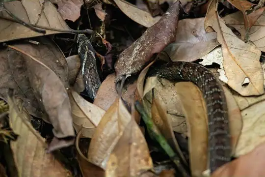
Annam Kukri SnakeOligodon annamensis Ashy Kukri SnakeOligodon cinereus
Ashy Kukri SnakeOligodon cinereus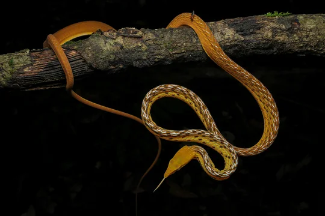
Asian Vine SnakeAhaetulla prasina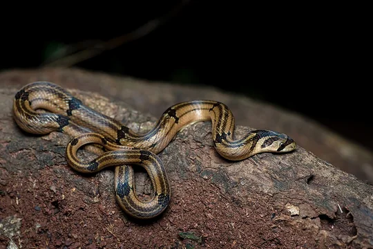
Assam Kukri SnakeOligodon catenatus Banded KraitBungarus fasciatus
Banded KraitBungarus fasciatus- No photo yetBangkok Mud SnakeEnhydris jagorii
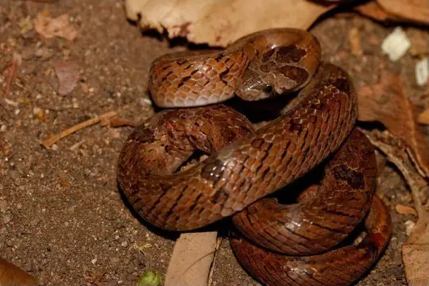
Barron's Kukri SnakeOligodon barroni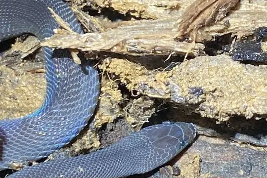
Bearded SnakeFimbrios klossi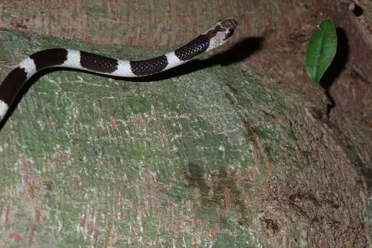
Blanford's Bridal SnakeLycodon davisonii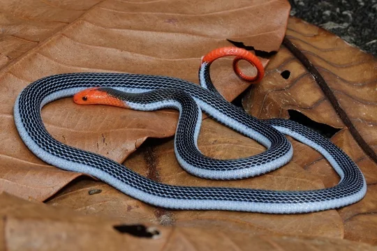
Blue Coral SnakeCalliophis bivirgatus Blue KraitBungarus candidus
Blue KraitBungarus candidus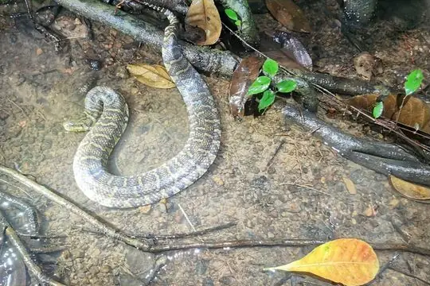
Bocourt's Mud SnakeSubsessor bocourti Boie's Mud SnakeHypsiscopus plumbea
Boie's Mud SnakeHypsiscopus plumbea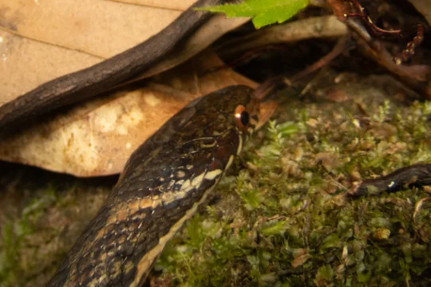
Boulenger's KeelbackHebius boulengeri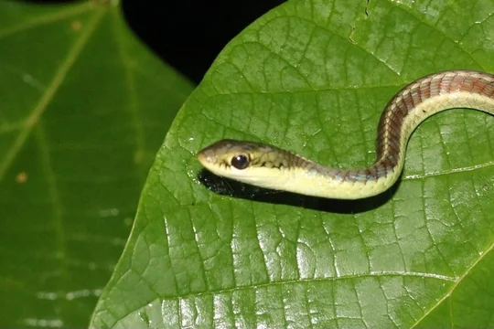
Burmese BronzebackDendrelaphis subocularis Burmese PythonPython bivittatus
Burmese PythonPython bivittatus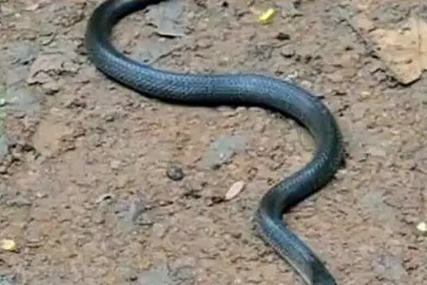
Cambodian Kukri Snake (kampucheaensis)Oligodon kampucheaensis Cantor's Kukri SnakeOligodon cyclurus
Cantor's Kukri SnakeOligodon cyclurus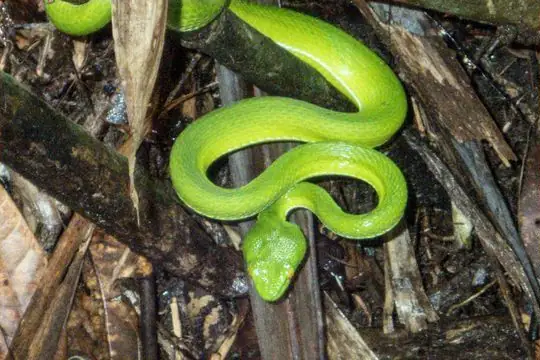
Cardamom Mountains Green PitviperTrimeresurus cardamomensis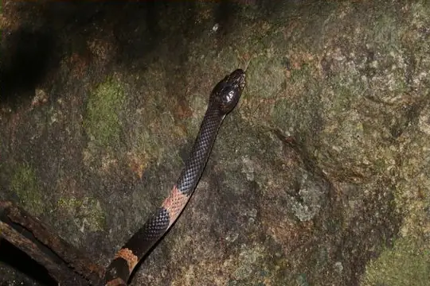
Cardamom Mountains Wolf SnakeLycodon cardamomensis Chinese Mountain Pit ViperOvophis monticola
Chinese Mountain Pit ViperOvophis monticola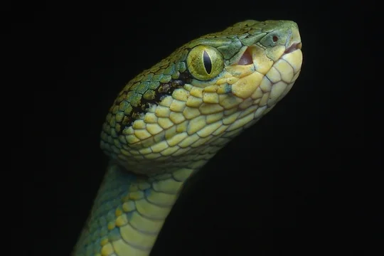
Common Bamboo ViperCraspedocephalus gramineus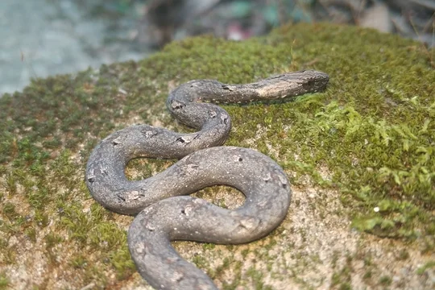
Common Mock ViperPsammodynastes pulverulentus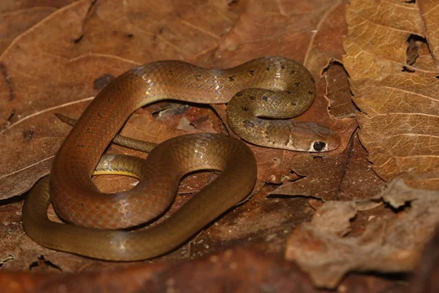
Common RingneckGongylosoma scriptum Common SeasnakeHydrophis schistosus
Common SeasnakeHydrophis schistosus Common Wolf Snake (capucinus)Lycodon capucinus
Common Wolf Snake (capucinus)Lycodon capucinus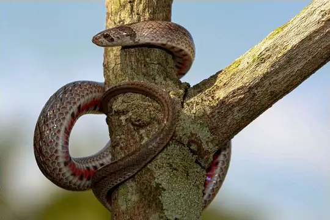
Deuve's Kukri SnakeOligodon deuvei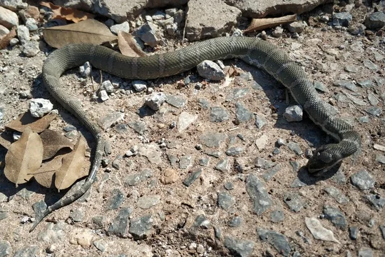
Deuve's Water SnakeHomalopsis nigroventralis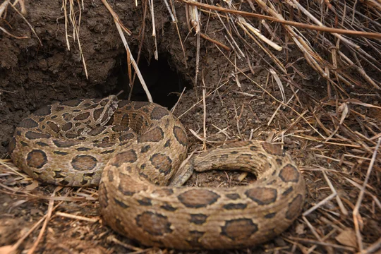
Eastern Russel's ViperDaboia siamensis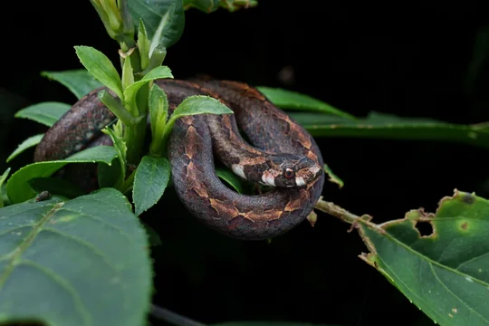
Eberhardt's Kukri SnakeOligodon eberhardti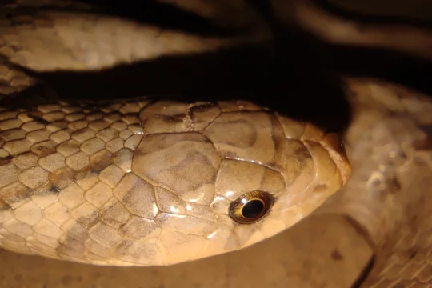
Fasciolated Kukri SnakeOligodon fasciolatus Gerard's Water SnakeGerarda prevostiana
Gerard's Water SnakeGerarda prevostiana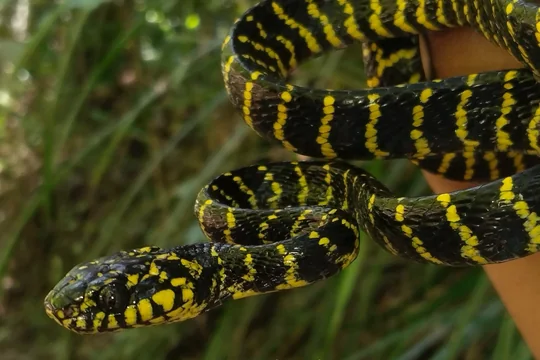
Gold-ringed Cat Snake (dendrophila)Boiga dendrophila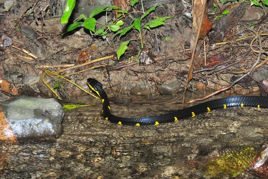
Gold-ringed Cat Snake (melanota)Boiga melanota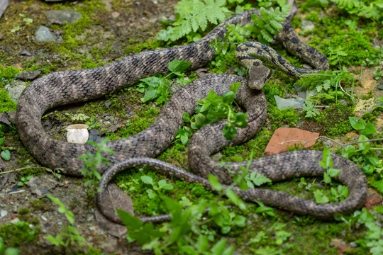
Gray Cat SnakeBoiga siamensis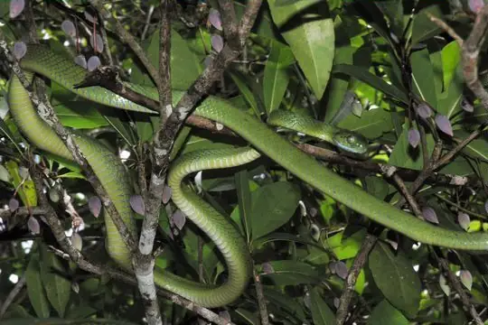
Green Cat SnakeBoiga cyanea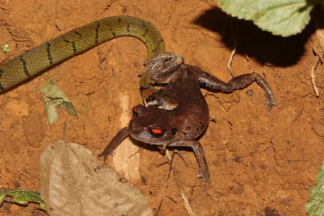
Green KeelbackRhabdophis nigrocinctus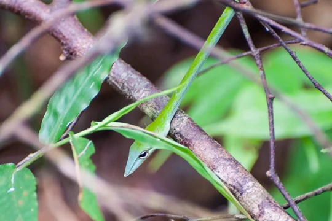
Green Vine Snake (nasuta)Ahaetulla nasuta Indo-Chinese Rat SnakePtyas korros
Indo-Chinese Rat SnakePtyas korros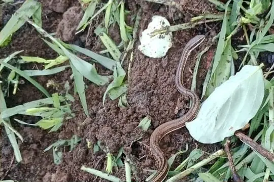
Indo-Chinese Sand SnakePsammophis indochinensis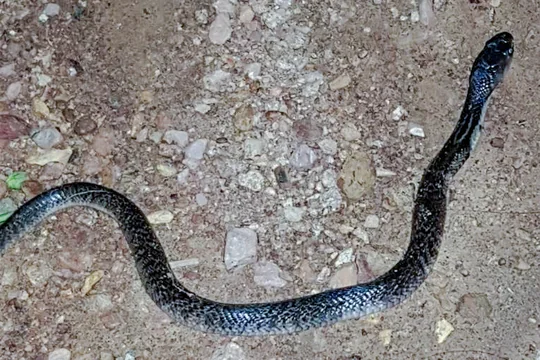
Indo-chinese Spitting CobraNaja siamensis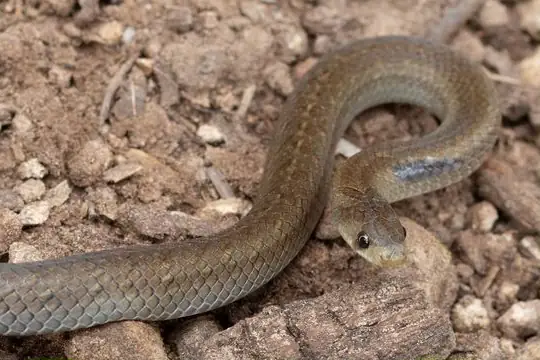
Inornate Kukri SnakeOligodon inornatus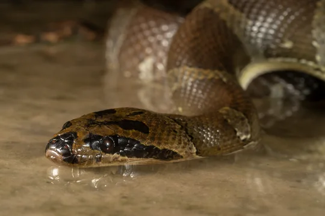
Jack's Water SnakeHomalopsis mereljcoxi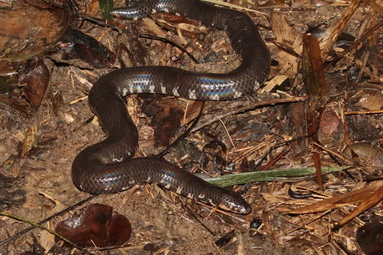
Jodi's Pipe-SnakeCylindrophis jodiae Keeled Rat SnakePtyas carinata
Keeled Rat SnakePtyas carinata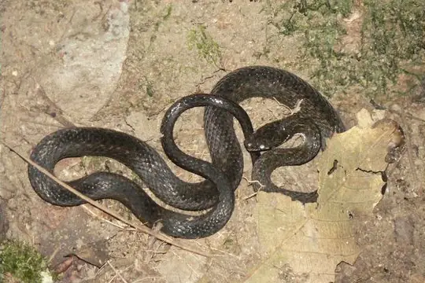
Khasi KeelbackHebius khasiensis King CobraOphiophagus hannah
King CobraOphiophagus hannah- No photo yetKloss' Sea SnakeHydrophis klossi
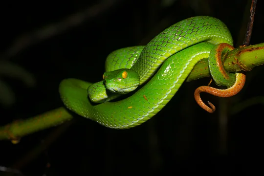
Kramer's Pit ViperTrimeresurus macrops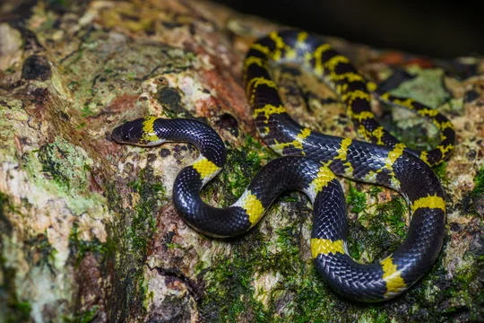
Laotian Wolf SnakeLycodon laoensis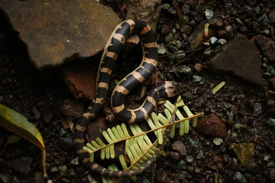
Linne's Water SnakeHomalopsis buccata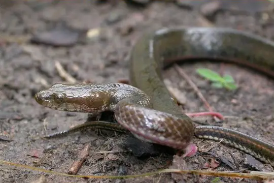
Longtailed Mud SnakeEnhydris longicauda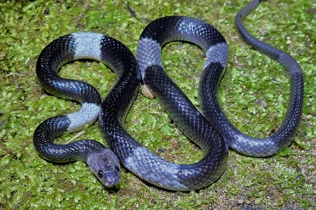
Malayan Banded Wolf SnakeLycodon subcinctus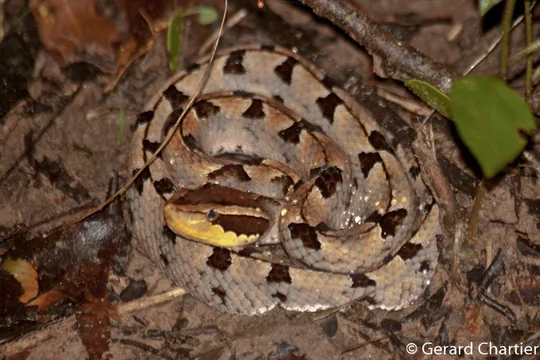
Malayan Pit ViperCalloselasma rhodostoma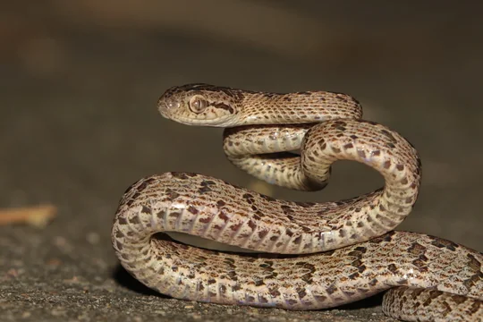
Many-spotted Cat SnakeBoiga multomaculata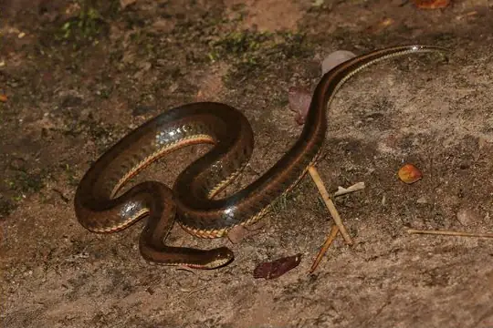
Mekong Mud SnakeEnhydris subtaeniata Monocled CobraNaja kaouthia
Monocled CobraNaja kaouthia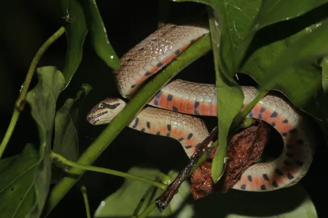
Mouhot's Cambodian Kukri SnakeOligodon mouhoti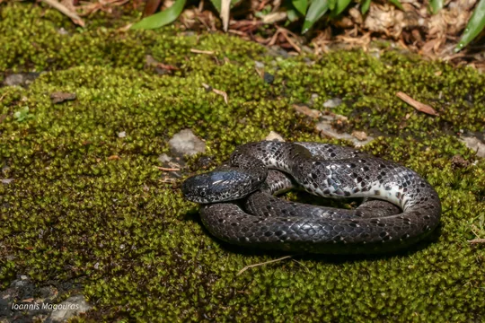
Mountain Slug SnakePareas margaritophorus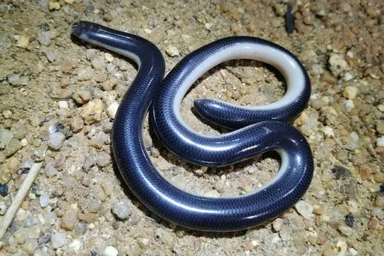
Müller's Blind SnakeArgyrophis muelleri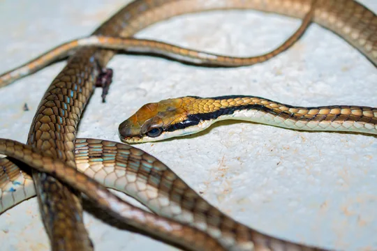
Nganson BronzebackDendrelaphis ngansonensis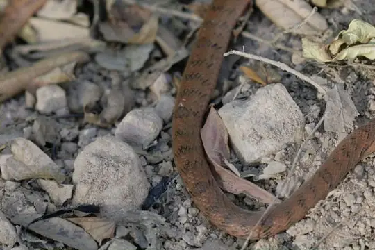
Ocellated Kukri SnakeOligodon ocellatus Oriental RatsnakePtyas mucosa
Oriental RatsnakePtyas mucosa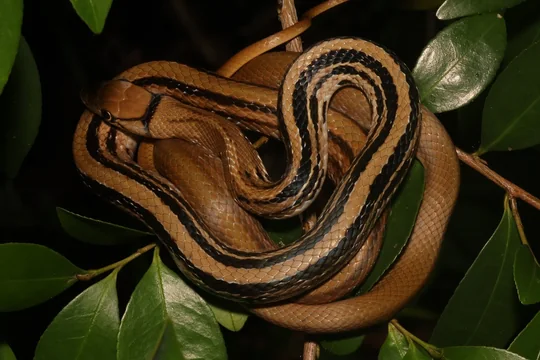
Radiated RatsnakeCoelognathus radiatus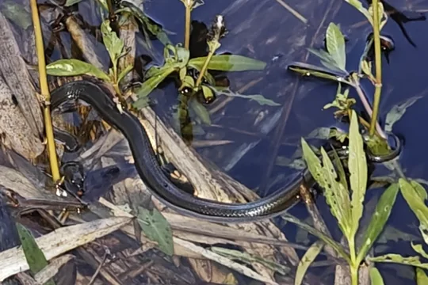
Rainbow Mud SnakeEnhydris enhydris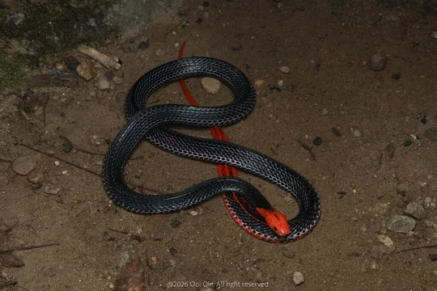
Red-headed KraitBungarus flaviceps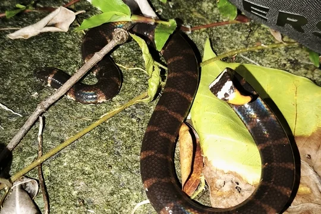
Red-tailed Pipe SnakeCylindrophis ruffus- Saint Giron's Kukri SnakeOligodon saintgironsi
- Siamese Blind SnakeArgyrophis siamensis
 Southeast Asian BockadamCerberus schneiderii
Southeast Asian BockadamCerberus schneiderii- Speckled Coral Snake (maculiceps)Calliophis maculiceps
- Striped Kukri SnakeOligodon taeniatus
- Tay Ninh Mud SnakeEnhydris innominata
- Tentacled SnakeErpeton tentaculatum
- Triangle KeelbackXenochrophis trianguligerus
- Triangle Many-tooth SnakeSibynophis triangularis
- Vogel's Pit ViperTrimeresurus vogeli
- White-lipped PitviperTrimeresurus albolabris
- Yellow Striped SnakeCoelognathus flavolineatus
 Yellow-spotted Keelback Water SnakeFowlea flavipunctatus
Yellow-spotted Keelback Water SnakeFowlea flavipunctatus- Zoos Victoria's Wolf SnakeLycodon zoosvictoriae
- No photo yetAcrochordus dubius
- Craspedocephalus rubeus
No snakes in Cambodia match.
Cambodia’s snakes in numbers
- Families: Colubridae 41, Homalopsidae 13, Elapidae 10, Viperidae 9, Cylindrophiidae 2, Typhlopidae 2, Acrochordidae 1, Pareidae 1, Psammophiidae 1, Pseudaspididae 1, Pythonidae 1, Xenodermidae 1.
- 2 are recorded in no other country or territory in SnakeList: Cambodian Kukri Snake (kampucheaensis), Longtailed Mud Snake.
How precisely they are recorded
Of the 83 living species recorded in Cambodia, 36 are recorded by province in SnakeList’s data; 47 are recorded only for Cambodia as a whole, so the province pages list them as possible rather than recorded. SnakeList records each species by province, not by exact spot, so a species listed for a province may live in only part of it.
Provinces
The provinces where SnakeList records snakes, with how many living species are recorded in each. Each page has its species, venomous snakes, families, the species found only there, its cities and neighbours.
- Battambang 3 species
- Kampong Cham 1 species
- Kampong Thom 1 species
- Kampot 4 species
- Kandal 2 species
- Koh Kong 25 species
- Mondulkiri 9 species
- Phnom Penh 1 species
- Preah Vihear 4 species
- Pursat 3 species
- Ratanakiri 1 species
- Siem Reap 19 species
- Sihanoukville 1 species
No place matches that.
Cities
Its biggest cities, biggest first. SnakeList records snakes by province, not by city, so each city page shows the species recorded in its province and, separately, those only possible there - not species confirmed in the city.
- Phnom Penh Phnom Penh Municipality
No place matches that.